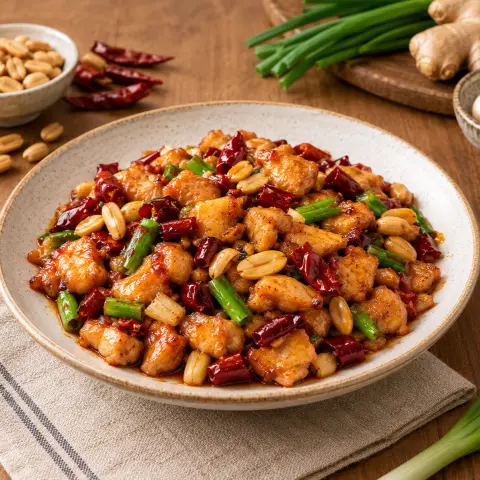

🥜 꿍바오 치킨
부드러운 닭고기, 바삭한 땅콩, 건고추를 윤기 나는 새콤달콤 소스에 볶은 쓰촨 요리.
재료
- 닭고기350 g
- 땅콩1 컵
- 전분2 작은술
- 맛술1 작은술
- 간장1 큰술
- 노두유0.5 작은술
- 식초1 큰술
- 설탕1 작은술
- 마늘3 쪽
- 생강5 g
- 건고추4
- 화자오0.5 작은술
- 대파6 대
- 식용유3 큰술
만드는 법
- 닭고기를 2cm 깍둑썰기해 기름 1작은술, 전분 1작은술, 맛술, 소금과 후추 약간에 버무려 20분 두어요.
- 생땅콩이라면 기름을 조금 두르고 중불에서 3분 볶은 뒤 식혀 바삭하게 만들어요.
- 소스: 간장 두 종류, 식초, 설탕, 물 3큰술, 전분 1작은술을 섞어요.
- 아주 뜨거운 웍에 기름 2큰술을 두르고 닭고기를 노릇하게 익혀 꺼내요.
- 불을 줄이고 기름 1큰술, 편 썬 마늘, 다진 생강, 자른 건고추, 화자오, 대파 흰 부분을 넣어 향이 날 때까지 1–2분 볶아요.
- 닭고기를 다시 넣고 센불에서 1분 볶아요. 소스를 다시 저어 붓고 윤기가 날 때까지 약 1분 볶아요. 땅콩을 넣고 밥과 함께 내요.